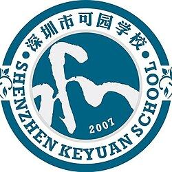
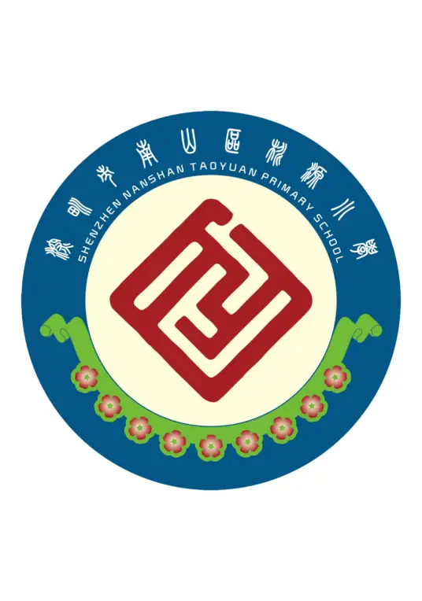
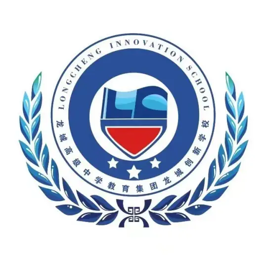

共建实验室学校
广州清华附属学校、明德实验学校、翠北小学、深实验高中园等学校与少科城围绕校内实验室空间、科技主题课程和项目式学习展开合作。
School Partnership
把真实科技实验室带进校园，让学生在共建空间、参观研学和项目实践中看见科学、工程与未来产业。



广州清华附属学校、明德实验学校、翠北小学、深实验高中园等学校与少科城围绕校内实验室空间、科技主题课程和项目式学习展开合作。
更多学校通过基地参观、研学开放日、实验室体验和科技活动进入少科城，让学生在真实场景中完成一次科技探索。
Inside Campus Labs
滚动页面查看学校里的真实实验室空间、课程场景和学生动手实践过程。